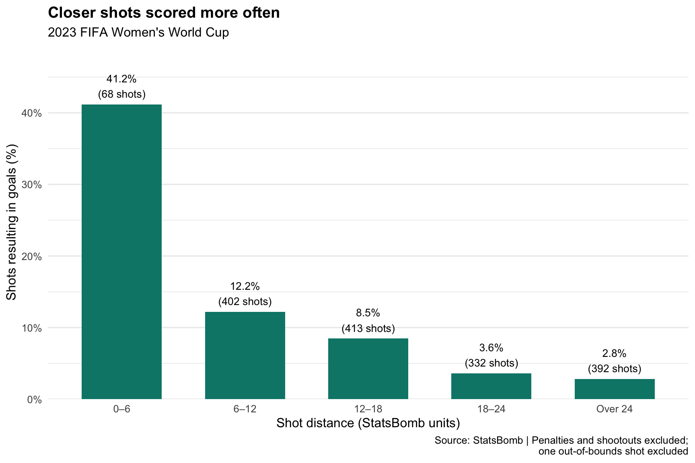
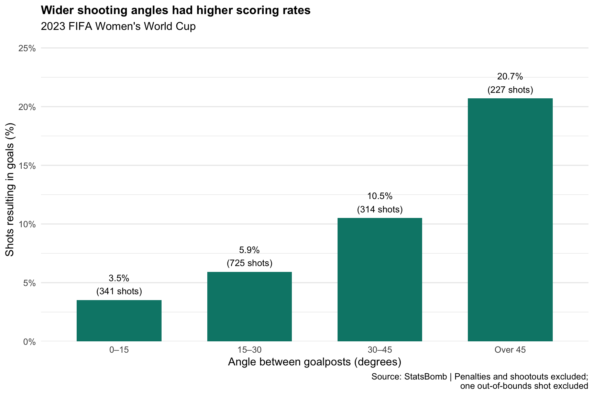

Shooting and Scoring at the 2023 Women’s World Cup
Introduction
Scoring goals is central to success in soccer, but not every shot offers the same chance of scoring. A player’s distance from goal and the angle available may help explain why some shots become goals while others do not.
This project investigates the question:
How does shot location relate to the likelihood of scoring at the 2023 FIFA Women’s World Cup?
Using StatsBomb event data, I examined scoring patterns by shot distance and shooting angle. I also compared headers with shots taken with the feet to explore whether differences in shot location help explain their scoring percentages.
Methods
Data were acquired from the StatsBomb Open Data repository. Shot events were collected from all 64 tournament matches.
The initial dataset contained 1,678 shots. I excluded 70 penalties and penalty shootout attempts, followed by one shot with a recorded location outside the standardized pitch boundaries. The final sample contained 1,607 shots, including 135 goals, for an overall scoring percentage of 8.4%.
Distance was calculated from the shot location to the center of the goal using StatsBomb’s standardized 120 × 80 coordinate system. These distances describe positions on the standardized pitch rather than measured distances on each stadium’s field.
Shooting angle was calculated as the angle between the two goalposts from the shooter’s location. A larger angle represents a wider view of the goal.
I summarized scoring percentages across distance and angle groups. An exploratory logistic regression examined distance, angle, and body part together. This model included foot shots and headers, excluding the 12 shots classified as other body parts.
Analysis and visualization were conducted in R using jsonlite, ggplot2, and plotly. Additional preparation details and exploratory analysis are provided on the About the Data page.
Results
Explore the shot locations
Each point represents a shot. Hover over a point to see the player, team, outcome, distance, and shooting angle. Click a legend category to hide or show it, or double-click to isolate it.
Closer shots scored more often
Scoring percentage decreased across the distance groups, from 41.18% within 6 StatsBomb units to 2.81% beyond 24 units. The closest group contained 68 shots, compared with between 332 and 413 shots in each of the remaining groups.

Wider shooting angles had higher scoring percentages
Scoring percentage increased from 3.52% for angles up to 15° to 20.70% for angles greater than 45°. Distance and angle are related, so these grouped comparisons do not establish their independent associations with scoring.

Headers and foot shots came from different locations
Headers had a higher overall scoring percentage than foot shots: 9.79% versus 7.71%.
However, headers were typically taken closer to goal. Their median distance was 9.48 StatsBomb units, compared with 19.69 for foot shots. Headers also had a wider median shooting angle: 41.37° versus 18.94°.
| Body part | Shots | Goals | Scoring percentage (%) |
|---|---|---|---|
| Foot | 1258 | 97 | 7.71 |
| Header | 337 | 33 | 9.79 |
| Other | 12 | 5 | 41.67 |
The other-body-part category contained only 12 shots. Its high scoring percentage should be interpreted cautiously because it is based on very few attempts.
Accounting for distance, angle, and body part together
The logistic regression included 1,595 shots and 130 goals. Odds ratios below 1 indicate lower estimated odds of scoring; values above 1 indicate higher estimated odds.
| Variable | Odds ratio | 95% CI: lower | 95% CI: upper |
|---|---|---|---|
| Distance: per additional StatsBomb unit | 0.937 | 0.895 | 0.981 |
| Shooting angle: per additional degree | 1.030 | 1.014 | 1.046 |
| Header compared with foot shot | 0.394 | 0.243 | 0.639 |
Holding the other included variables constant:
- Each additional distance unit was associated with 6.3% lower odds of scoring.
- Each additional degree of shooting angle was associated with 3.0% higher odds of scoring.
- Headers had 60.6% lower odds of scoring than foot shots at the same modeled distance and angle.
These are changes in odds, rather than percentage-point changes in scoring probability. The header comparison changed direction after adjustment, illustrating why the unadjusted scoring percentages should be interpreted alongside shot location.
Sensitivity to the excluded location
Including the out-of-bounds shot using its recorded coordinates changed the distance odds ratio from 0.937 to 0.945, the angle odds ratio from 1.030 to 1.031, and the header odds ratio from 0.394 to 0.401. The associations retained the same direction and similar magnitudes.
Conclusion
In this tournament, shots taken closer to goal and with a wider view of the goal had higher observed scoring percentages. Both location measures remained associated with scoring when included together in an exploratory logistic regression.
Headers scored more frequently overall than foot shots, but they were typically attempted from closer distances and wider angles. After accounting for these location measures, headers had lower estimated odds of scoring than foot shots.
These findings describe associations, not causal effects. The model assumes linear relationships between the location measures and the log-odds of scoring. It also treats shots as independent, despite repeated attempts by the same players and teams, so its confidence intervals should be interpreted cautiously. Defensive pressure, goalkeeper positioning, and other contextual factors were not included. Results from one tournament may not generalize to other competitions.
Overall, the findings highlight the importance of considering where shots are taken when comparing scoring outcomes.